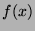
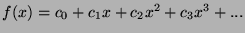
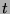
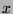
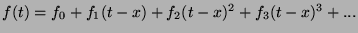

Before beginning a discussion of the evaluation and stamp methods, it is necessary to understand the ``CPOLY'' and ``FPOLY'' classes.
These classes represent polynomials. At present, only the first order versions are used, but consider that they could be extended to any order.
When evaluating a function , there are several possible representations for the result. The ``CPOLY'' and ``FPOLY'' represent two of them.
The ``CPOLY'' classes represent the result in a traditional polynomial form. Consider a series of terms, c0, c1, c2, ... These represent the coefficients of a Taylor series of the function expanded about 0. (Maclauran series). Thus  In most cases, only the c0 and c1 terms are used, hence the ``CPOLY1'' class. The series is truncated, so it is exact only at one point. The value ``x'' in the ``CPOLY'' class is the point at which the truncated series is exact, so it is not truly a series expanded about 0.
The other ``FPOLY'' classes represent the same polynomial as a Taylor series expanded about a point ``x''. Again, consider a series of terms, f0, f1, f2, ... This time the terms represent the function evaluated at x and its derivatives. Therefore, f0 is , f1 is the first derivative, f2 is the second derivative, and so on. To evaluate this for some  near ,  Again, in most cases, only the f0 and f1 terms are used, hence the ``FPOLY1'' class.
Both of these are equivalent in the sense that they represent the same data, and there are functions (constructors) that convert between them. The ``FPOLY'' form is usually most convenient for function evaluation used in behavioral modeling and device modeling. The ``CPOLY'' form is most suitable for stamping into the admittance matrix and current vector for the final solution.
In simplified form, the algorithm looks like this ...
before doing anything ....
expand() precalc()
on issuing the ``tran'' command ..
tr_begin() // get ready
for (each time step) {
tr_advance() // precalculate and propagate
for (each iteration) {
tr_queue_eval() // decide which models need evaluating
do_tr() // evaluate models
tr_load() // build the matrix of equations
solve the resulting system of equations
}
if (converged) {
tr_review() // how are we doing? suggest time step
}
if (no problems) {
tr_accept() // postcalculate and accept data
}
}
The functions referred to above are actually loops that call that function for all devices in the circuit.
For all of them, it is possible that they may not be called. If there is evidence that the result will not change from the last time it was called, it probably will not be called. Since this algorithm is not perfect, it is possible that any particular function may be called twice, so they are written so calling more than once is equivalent to calling once.
The expand functions expand subcircuits and models, as needed. Unlike Spice, it does not flatten the circuit. It allocates space for the additional storage, attaches models, and related tasks. It does not compute any values. It is called once after reading the circuit, and possibly later when the topology of the circuit is changed.
Most simple elements do not have expand functions. Most advanced components do.
Expanding a subcircuit makes a copy of it, and remaps the nodes. Most components use a shallow copy. That is, if something is attached through a pointer, the value of the pointer is copied, not the attachment. Commons are never copied when the owner components are copied.
It is ok to expand a component more than once. Either it frees then re-expands, or it keeps what it can and checks to make sure it is correct.
The precalc functions attempt to pre-calculate anything that will remain constant during a simulation run. This includes size dependent transistor parameters and the stamp values for linear elements.
The actual evaluation of constant linear elements is done here. For nonlinear elements, it computes a first guess.
These functions are called once on issuing a simulation command. The dc_begin functions are called on starting a DC or OP anaylsis. The tr_begin functions are called on starting a transient analysis from time = 0, or the first time. The tr_restore functions are called on starting a transient analysis in such a way that the analysis continues from where a previous transient analysis left off.
The purpose is to make sure that the initial guesses and numbers for prior iterations that don't exist are properly set up. For linear elements, the values are set up here and are not computed later.
These functions are called before beginning a new time or voltage step.
For basic storage elements like capacitors, they store the data from the previous step. They may also attempt to predict a new value, in hopes of speeding up the real solution.
For delay elements like logic devices and transmission lines, this function does the real work. It takes previous results and applies them, generating data that will be later loaded into the matrix.
This function returns true if the component needs to be evaluated on this iteration. It should return false if it has already been queued, but some do not do this.
This function queues the component to be evaluated, if it needs it. If tr_queue_eval is not called, it will not be evaluated.
In most cases, the do_tr functions do the real work, or call the tr_eval function to do it. It evaluates the model, checks convergence, and queues it for loading. Calling this function more than once on an iteration is harmless, except for the waste of time.
Usually, it calculates the function and derivative. It may also do integration, interpolation, iteration, or whatever is required. The result is a set of values ready to stamp into the admittance matrix and current vector.
There are several distinct steps within this function.
This function gives the appearance of loading the admittance matrix and current vector with the values calculated in do_tr.
Actually, it does much more. In most cases, it actually loads a correction factor, assuming the old values are already loaded. To do this, it keeps track of what values are actually loaded. Whether it loads a correction or the actual value is determined first by the option incmode, then by status information about the solution. If it is suspected that correcting would cause too much roundoff error, it loads the actual value. The decision of whether to do a full load or an update is global.
In addition, it may apply damping in hopes of improving convergence. This means to load a value somewhere between the new and old values, in effect taking a partial step. The decision to damp is semi-global. Groups of elements are adjusted together.
The actual loading is done by one or more of a small group of general functions, depending on whether the element is active, passive, poly, or a source. Only certain patterns can be stamped. Complex devices use a combination of these patterns.
WARNING to model developers: DO NOT stamp the matrix directly!
The tr_review function checks errors and signal conditions after a time step has converged. It makes entries into the event queue, makes mode decisions for mixed-mode simulation, and evaluates time step dependent errors. It returns an approximate time that the element wants for the next step. The actual next time step will probably be sooner than the value returned.
This function is called after the solution at a time step has been accepted. For most devices, it does nothing. For devices having storage and delayed propagation, it evaluates what signal will be propagated. For a transmission line, it calculates and sends on the reflections.
This function removes the component from the matrix, possibly by subtracting off what was loaded. Usually, it sets the current values to 0 and calls tr_load.
The basis of it is in the files ``s_tr_swp.cc'' and ``s_tr_rev.cc''.
The function TRANSIENT::review sets two variables: ``approxtime'' and ``control''.
The variable ``approxtime'' is a suggestion of what the next time should be. Note that this is a time, not a difference. Also note that the simulator may override this suggestion. Another ``control'' is an enum that shows how the time was selected. You can probe control(0) to find this code, or control(1) to see how many steps (not iterations) it calculated internally.
This time may be in the future, past, or again at the present time, depending on conditions. A time in the future means all is well, and the simulation can proceed as expected. A time in the past indicates something is wrong, such as convergence failure, excessive truncation error, or a missed event. In this case, the step is rejected, and time backed up. A repeat at the present time usually means a latency check failed. A portion of the circuit that was thought to be latent was found to be active. This usually indicates a model problem.
First, it attempts to suggest a time ``rtime'' based on iteration count and options.
There are several ``options'' that control the stepping:
Second it makes another suggestion ``tetime'' based on truncation error, etc. It does this by calling the ``review'' function for all components, and taking the minimum. Any component can suggest a time for its next evaluation with its review function. Most components return a very large number, letting the capacitors and inductors dominate, but it is not required for it to be so. This time should be in the future, but errors could produce a time in the past.
Then, the earliest time of the above two methods is selected. A time in the past means to reject the most recent time step and back up, but note that this time is only a suggestion that may not be used.
The function ``TRANSIENT::sweep'' essentially processes the loop ``for (first(); notpastend; next())''. The function ``TRANSIENT::next()'' actually advances (hopefully) to the next step. It may go backwards.
The actual time step depends on the suggestion by the review function (approxtime), the event queue (which includes what Spice calls ``breakpoints''), the user step size (nexttick), and some tricks to minimize changes.
Some considerations ...
So, here it is ...
Assume we want it at the time the user requested. If the event queue says to do it sooner, take it, else take the user time. Note that this time is needed exactly, either now or later. If the ``approxtime'' is sooner than the exact time, inject a time step as follows... if the time step is less than half of the time to when an exact time is needed, take the approxtime, else take half of the exact interval, in hopes that the next step will use up the other half.
After that, there are some checks ....
``Very backward time step'' means that the suggested new step is earlier than the PREVIOUS step, meaning that both the current step and its predecessor are rejected, thus it should back up two steps. Since it can back up only one step, it rejects the most recent step and tries again at the minimum step size. This usually means there is a bug in the software.
``Backwards time step'' means to reject the most recent step, but the one before that is ok. It will reject the step and try again at the smaller interval. This happens fairly often, usually due to slow convergence.
``Zero time step'' means that the new time is the same as the previous time, which usually means there is a bug in the software. Something is requesting a re-evaluation at the same time.
The combination of ``zero time step'' and ``very backward time step'' means that the re-evaluation didn't work.
Now, accept the new time and proceed.
Every component can have a ``review'' function, in which it can determine whether to accept or reject the solution. It will accept by suggesting a time in the future, or reject by suggesting a time in the past. It returns the suggested time. It can call new_event to request an exact time.
For capacitors and inductors, the review function attempts to estimate truncation error using a divided difference method, and it suggests a time for the next solution that will result in meeting the error requirement. Occasionally, it will discover that the step just computed fails to meet the requirement, so it will reject it.
Truncation error is related to the third derivative of charge or flux. Since current is the first derivative of charge, it would seem that second derivative of current should produce the same results faster. In practice, the current based method tends to estimate high leading to smaller steps, and the charge based method tends to estimate low, leading to larger steps. The conservative approach would suggest using the current based method, but that sometimes led to unreasonably small steps ans slow simulations, so I chose (as Spice did) the other method. Either method is ok when the step size used is close to being reasonable, but when the trial step is unreasonably large, either approach gives a very poor estimate. Taking a step much too small will make the simulator run much slower, as it takes many steps, then the step size is allowed to grow slowly. This is slower both because of the many unnecessary steps, and because of many adjustments. Taking a step that is much too large will result in a choice that is better than the first trial, which will make a better estimate and be rejected. It is rare to get more than one rejection based on truncation error.
GnuCap will usually do more time steps than Spice will, due to 2 factors. GnuCap will force calculations at print points and fourier points, and can reject a bad step. It is usually a little more, but could be as much as twice as many steps.